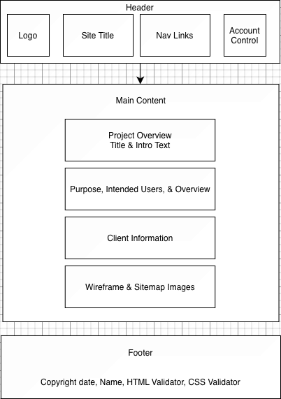
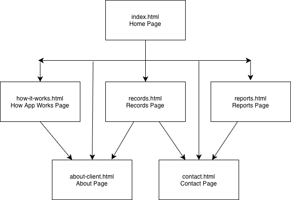

Project Overview — Finance App (Client: Atharva)
Project Categorization
Client Category: Peer classmate (Atharva).Project Category: Individual promoting a professional/community project (Finance App demo site).
Project Name
Finance App — Scan receipts. Track taxes.
Project Overview
Purpose
Build a web application that helps individuals and small organizations convert purchase receipts into clean, tax-ready data. The app showcases receipt uploads, OCR results, record browsing, and high-level summaries so users can understand spending by category, vendor, and month.
Intended Users
Students and early-career professionals tracking personal expenses
Side-hustlers and sole proprietors preparing deductions
Community org treasurers who need quick visibility into spending
Content Overview
Demo of receipt parsing and categorized records
Walkthrough of the OCR pipeline
Interactive gallery of receipts
Reports page with charts and summaries
About and Client information
Note: This course version is read-only. Interactivity is client-side only, using AJAX to load sample data.
Client Information
Name: AtharvaOrganization: Finance App (Receipt OCR & Insights)Email: [private]Phone: [private]
Atharva is the collaborating client for requirements, scope approval, and visual direction. Meetings will focus on refining layout, copy, and interactivity.
Wireframe (Default Page Layout)
Created in draw.io via UNCC Google Drive. The layout uses a fixed header, global nav, main content area, and footer.

Default page wireframe.
Wireframe (draw.io)
Site Map
index.html — Homehow-it-works.html — How It Worksrecords.html — Recordsreports.html — Reportsabout-client.html — About & Clientcontact.html — Contact

Sitemap showing navigation flow.
Sitemap (draw.io)
The global top navigation links to each page with a single click; the footer repeats essential links for consistency.
Page Design Details
1) Home — index.html
Purpose: Introduce app and value proposition.Audience: New users.Content: Hero, quick explainer, navigation links.Data entry: None.UI: Buttons and internal links.Actions: Smooth navigation to sections.Validation: N/A.Notes: jQuery UI Accordion for FAQs.
2) How It Works — how-it-works.html
Purpose: Explain OCR process visually.Audience: Users and stakeholders.Content: Step cards, sample receipt, parsed data snippet.Data entry: Optional toggle for examples.UI: jQuery UI Tabs.Actions: AJAX loads example JSON.Validation: N/A (read-only demo controls).
3) Records — records.html
Purpose: Browse parsed receipts interactively.Audience: Users exploring data.Content: Grid of receipts with details modal.Data entry: Filter and search options.UI: Datepicker, lightbox preview.Actions: AJAX loads JSON, filters data client-side.Validation: Enforce start ≤ end for dates; sanitize text inputs; require at least one filter value before searching.Notes: Read-only demo (no writes).
4) Reports — reports.html
Purpose: Display spending summaries and charts.Audience: General users.Content: Monthly and category charts.Data entry: Category and date selectors.UI: Chart.js, dropdowns.Actions: AJAX loads chart data dynamically.Validation: Check timeframe bounds; ensure at least one category is selected; ignore invalid inputs gracefully.
5) About & Client — about-client.html
Purpose: Explain goals, collaboration, and credits.Audience: Stakeholders and graders.Content: Project scope, collaboration summary.Data entry: None.UI: Static content with anchor links.Actions: N/A.Validation: N/A.
6) Contact — contact.html
Purpose: Provide demo contact form.Audience: Visitors.Content: Name, email, message fields.Data entry: Yes, validated client-side.UI: jQuery UI styled form, dialog confirmation.Actions: Simulated message confirmation.Validation: Required fields; basic email pattern; message length check.
Dynamic Functionality
AJAX loading of sample JSON for receipts and reports
Client-side filtering and searching
jQuery UI widgets (Tabs, Datepicker, Accordion, Dialog)
Chart.js charts and Lightbox for image viewing
Purpose
Demonstrate interactivity and client-side processing similar to the production app while keeping everything read-only for this course.
Example References
Communication & Timeline
Week 1: Requirements & design proposal with Atharva
Week 2: Wireframe and sitemap approval
Week 3: Records page (AJAX + filters)
Week 4: Reports, About, and Contact pages
Week 5: Final polish, accessibility, and validation checks
Technical Notes
Shared header and footer (dynamic includes)
Client-side interactivity only
Sample data in /data/; images in /images/receipts/
References & Credits
Client: Atharva — Finance App (requirements, visual direction)
Libraries: jQuery UI, Chart.js, basicLightbox
Author: John Hand — Nov 2, 2025